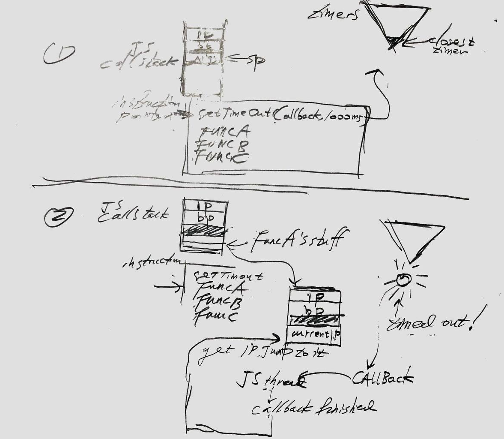

JS 异步实现猜想
之所以说是猜想，是因为我懒得找资料，但我以前是看过资料的，所以至少方向偏离得不是很严重，我的目的是让自己理解 async/await 的用法，因为它们反直觉，无法理解，过一段时间就忘了。这就跟谐音法记单词，或者吃胶囊要喝水冲下去一样，你要把东西冲进大脑里，不管是什么方式，这种方式又通常是很个人的，所以如果有失偏颇，概不负责。
前提: 内核线程是存在的
JS 是单线程语言，什么意思？什么不是单线程语言？C 不是？因为 C 可以调用 pthread, futex? 我忘了到底是单线程语言还是怎么表达 -- 这篇文章的关键是我根本不查资料 -- 那么如果有人真的把一门语言叫做单线程语言，意思是这门语言的所有指令都在一个线程里面执行，但用过 JS 的人都知道 setTimeout 不会阻塞，超时之后就会执行回调函数。因此，单线程的 JS 怎么做到这一点？
不用另外一个线程，这是无法实现的，JS 将时间和回调函数传给另外一个线程，这个线程就是浏览器内核线程，或者在 node 里面，node 的运行时，这个线程，或者多个线程，为了隐蔽这些不必要的细节，可以统称为运行时。这个运行时将时间和回调函数封装成一个事件，放在一个堆里面 -- 这就是细节了，cron 怎么实现？不在乎。总而言之，运行时不断地查看哪个事件到点了(pending)，就把它取出来，放在 JS 的执行线程的栈里面。
为了增加点视觉效果，画了个图：

当计时器超时的时候，将它的 callback 取出，放在 JS 的调用栈里面，记住当前执行到那个指令，把它的 IP 记下来，然后开始执行 callback, 执行完之后找到 IP，继续执行。
我这是按照编译型语言的思维去理解，而实际上解释型语言的指令也许不是写死的，因此我猜也许可以动态增加，或者删除指令，如果是这样，就会破坏 ret 语义，因为你破坏了指令的偏移量。
为什么这么想呢，因为突然之间 JS 的调用栈被入侵了，编译型语言根本不会发生这种事。那我就不知道怎么实现了，有虚拟机的解释型语言先被编译成虚拟机的指令码，比如 lua -- 也许 JS 语言用栈来管理指令，这样才能动态地增加指令，因为你根本不知道什么时候会插入一个 callback, 还要记得 callback 执行之前 JS 在干什么 -- 除了栈，还有什么方式能管理？没了。我认为编译型语言那套 bp, ip, sp 不适用于解释型语言。
言归正传，可以看出，内核线程是必要的，所谓单线程语言这种说法有点误导人，JS 不允许你创建线程，不代表不能用其他线程，用其他线程的方式也是有限的，比如 setTimeout.
async/await
假设有一个函数 f, 我想让它在后台执行，执行完之后通知我。跟 setTimeout 差不多，只是你根本不知道什么时候执行完函数，那么就必须有一个类似的接口，比如 bg(f)。
然而 JS 并不采用这种思路，它规定一切想要在后台（指内核线程）运行的函数，在声明的时候，必须声明为 async, eg.: async function f() {}
然后 JS 执行到 f() 的时候，它将 f() 交给内核线程去运行，但不知道为什么，JS 不接受通知 -- 这时候我们可以猜想一下为何，根据第一节，callback 指令把调用栈搞得非常混乱，这一个思想实验我们就能感觉到不应该让后台线程打断 JS 线程。这是第一点。第二点是, f() 的回调函数是什么? 答案是没有，那么如果不需要让 JS 线程执行点什么，通知 JS 的意义又是什么？
于是放弃通知这种设计，因为不知道怎么处理通知。就算你知道那么增加了复杂性, complexity is the mind killer/product killer/software killer。那么怎么知道函数已经完成了，由于思维定式我们想到了 poll，你可以不断得检查交给后台的事是否完成，在 JS 语境里面，叫做看 f 的 promise 是否已经实现，我不知道 JS 里面是否函数检查 promise 的状态：哦我看了一下 https://developer.mozilla.org/en-US/docs/Web/JavaScript/Reference/Global_Objects/Promise ，似乎没有。 Rust 的某些库有的：https://docs.rs/futures/0.1.0/futures/enum.Poll.html，Promise 有三种状态。
那么我们得出一个结论：你无法 poll promise。我们可以接受这一点。很多东西我们都可以接受，没什么理由，你要用 JS，你就要接受，不用就不接受。JS 怎么做呢 -- 提供一种阻塞的方式去等待 Promise 完成，那就是 await. 用法是 await <Promise>
那我就知道了，这实际上是让 programmer 去决定什么时候把 Promise 兑现。应许之地。那最好的做法是把该做的事尽可能都做了，然后尽快取回结果，就好像在水烧开之前，把菜切了，碗端好，然后准备就绪，调用 await <Boiler/kettle>, 这时候有 3 种情况，1 是调用的时候刚刚好水烧开，2是水已经烧开一段时间了，3 是水还要烧一会。
那我就理解，至少我说服了自己，我知道 async/await 怎么用了。
我还要假设，这样的话，后台至少有两种线程，一种用来处理 Promise，一种用来处理 timer。
实际上，搜搜 javascript, v8, async 这几个关键字可以看到实现大概是这么回事。
综上，这就是我用来把胶囊冲到胃里面的东西，water, wine, poison, drug, waste, don't care, as long as it works.